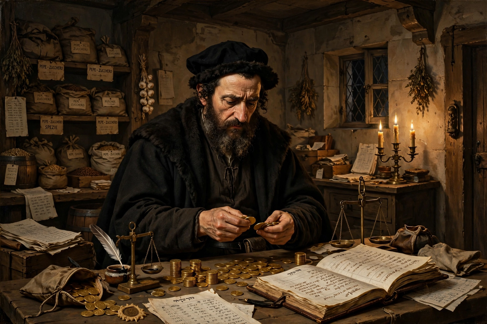

The Jew of Malta
| The Jew of Malta | |
|---|---|
 | |
| Written by | Christopher Marlowe |
| Date premiered | c. 1589–1590 |
| First published | 1633 |
| Genre | Tragedy / farce |
| Setting | Malta |
The Jew of Malta is a play by Christopher Marlowe, written about 1589–1590 and first performed by Lord Strange's Men in 1592. Its protagonist, the wealthy Jewish merchant Barabas, schemes his way through a Malta caught between Christian Spain and the Ottoman Turks. The play was hugely popular in its day and is often cited as an influence on Shakespeare's Shylock in The Merchant of Venice.
Plot
When Malta's governor Ferneze seizes Barabas's fortune to pay tribute owed to the Turks, Barabas plots revenge. He engineers the duel in which both his daughter Abigail's suitors die, poisons a convent of nuns (including Abigail, who has converted in horror at his schemes), and murders the friars who discover his crimes. Captured after betraying Malta to the Turks, he is made governor but betrays the Turks to the Christians — whereupon Ferneze traps him to fall into a cauldron he had prepared for his enemies. He dies cursing Christians and Turks alike.
Themes and reception
The prologue is spoken by "Machiavel", and the play's world of cynical religious realpolitik treats Christians, Jews and Muslims as equally hypocritical. Modern criticism is divided over whether the play is antisemitic or a satire that undermines its own villain's stereotypes; the tonal slide from tragedy into grotesque farce is much debated. The 1633 quarto, the earliest surviving text, was published with prologues by Thomas Heywood for a court revival.